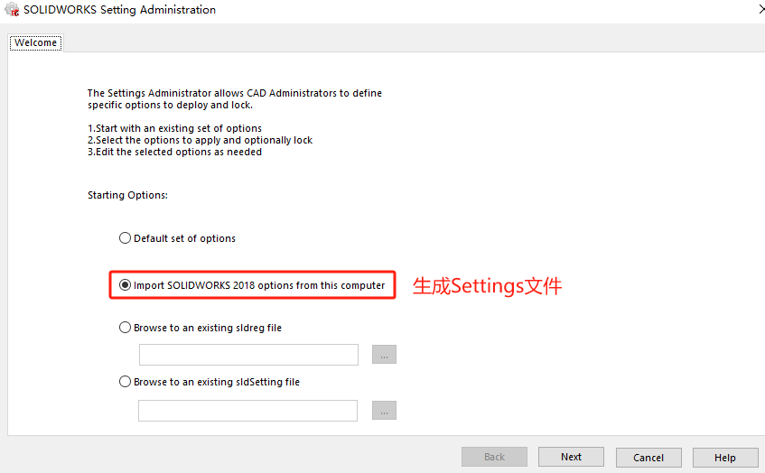

SOLIDWORKS管理映像
如果要在多台计算机上安装 SOLIDWORKS，您可以创建管理映像，然后将应用程序调用到其他计算机上。管理映像必须位于共享文件夹中
制作映像
如果要在多台计算机上安装 SOLIDWORKS，您可以创建管理映像，然后将应用程序调用到其他计算机上。
选择安装映像
启动 SOLIDWORKS 安装管理器。在欢迎页面，选择创建管理映像，然后选择以下选项之一：
使用默认设定生成新映像（默认）
使用现有映像的设定和文件生成新映像
使用为您站点的现有管理映像指定的配置设定生成映像。 单击 浏览，为现有管理映像指定安装目录。
输入序列号
映像内容设置
单击更改以修改产品或默认选项，其中包括：
- 管理映像位置
- 管理映像类型
产品选择这里我们按需选择即可，产品的内容也和我们前面输入的序列号有关。例如：只填SOLIDWORKS序列号，则只会有SOLIDWORKS本体产品可选。
注意：管理映像必须位于共享文件夹中，这里可以设置成用户可以访问到的服务器位置。
生成管理映像
接受许可协议，然后单击现在生成。
单击自定义映像，在管理映像选项编辑器中打开和显示设置。至此，你已完成SOLIDWORKS安装管理映像的创建，下面将介绍改安装映像的设置使用操作。
管理映像内容
制作好的管理映像文件夹包含：

使用映像
通过打开管理映像内“sldAdminOptionEditor.exe”这个程序内，进行编辑分组和安装设置和部署的操作。
建组设置
管理映像通过对网络内的设备（或IP地址）进行用户端添加，每个设备或组都可以有自己的设置，设置会按“机器设置”>“组设置”>“全局设置”的层次进行应用。
设置安装信息，包括：序列号、客户端安装选项、管理选项、要安装的软件、Toolbox/异型孔向导选项等。。。

新建组
添加用户
Administrative lmage Option Editor(管理映像选项编辑器)还提供了两种部署方法。
手动部署
指定的用户将收到电子邮件，在邮件里会有管理映像的文件夹位置。并会提示你打开“StartSWInstall.hta”安装程序，当然，这个安装程序也是全自动安装的。
邮件内容：单击该连接 <file://\192.168.72.1\SOLIDWORKS 2018 SP05 Admin\StartSWInstall.hta> 开始在您的计算机上安装 SOLIDWORKS 2018 SP5.0。用户点击安装会更新安装状态（如下图）
自动部署
使用 Windows 任务计划程序为选定的机器创建计划安装任务。
1、选择部署的用户（或组）；
2、在客户端证书里输入域管理员账号密码。
3、点击部署，管理映像会将任务发送客户端电脑的【Windows任务计划程序内】
部署是否成功：在客户端机器上，右键单击“计算机”>“管理”> 选择“任务计划程序”>“任务计划程序库”。如果已成功计划安装，名为“Install SOLIDWORKS 20XX”的事件将被添加到列表中。
设置管理员工具
创建设置文件
在部署或升级 SOLIDWORKS 软件时，为防止用户更改那些选项，您可以使用“设置管理员工具”来设置可应用的系统选项。 尽管向导仍然可用于复制设置，此工具将替换“复制设置向导”来部署设置。
使用“设置管理员工具”有三个步骤：
创建管理映像以访问该工具。
使用“设置管理员”生成 *.sldsettings 文件，其中包括您选定的 SOLIDWORKS 选项。
点击保存，我们会获得一份“设置文件swsetting”，这个文件能管理统一用户SW的【系统选项】设定。
使用设置文件
在 SOLIDWORKS 安装中包含 *.sldsettings 文件。注意：这里的文件也必须是在可以访问到的服务器网盘位置。
Q&A
关于升级
每次启动程序时，管理映像安装都会检查服务器上的映像是否有更新。
映像与安装之间的链接可用于自动执行更新。这意味着您应该将映像保留在服务器上。
升级到主要版本时，建议的方法是创建一个新映像，然后重新部署安装。
映像注意事项
您可从网络上的任何计算机安装管理映像，包括客户端计算机。
管理映像必须位于共享文件夹中。
如果您包括所有产品，则管理映像磁盘空间可占用 7GB 或更多。
如果在升级管理映像时更新共享名称，则在应用程序下次启动时客户端会自动升级。 有关详细信息，请参阅 升级管理映像。
部署管理映像时，映像路径必须少于 58 个字符。
要求客户端在其计算机上具有管理员特权。 如果客户端没有足够的权限，客户端可以作为不同用户运行安装。 当个人用户在计算机上没有本地管理权限（安装 SOLIDWORKS 产品所需的权限）时，此选项非常有用。
请参阅 从选项编辑器调用安装。 其中介绍了客户端没有足够的权限时安装映像的备选方法。
如果启用 Windows 记录或如果您使用“管理图像选项编辑器”中的状态功能，您必须具备此文件夹的读/写权限： {管理映像目录}\x64\Logs。
用户必须拥有管理映像文件夹内的64bit\logs 文件夹的读/写权限。
日志
如果在执行管理映像安装时出现问题，则可以使用日志文件来进行调查。日志分为两种类型：
- WindowsInstaler日志(包含相关产品名称)
- 安装管理器(IM)日志(名称为ErrorLogs)
只有在 Administrativelmage Option Editor(管理映像选项编辑器)中选定Createadiagnostic logduring eachinstallation(在每次安装期间创建诊断日志)选项时，才能将WindowsInstaller 日志复制到管理映像文件夹中。

参考
帮助手册：
1 | C:\Users\<Users name>\AppData\Roaming\SOLIDWORKS\Installation Manager Data\2018\lang\chinese-simplified\install_guide.chm |